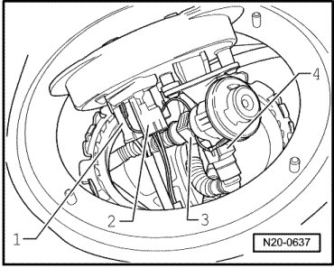
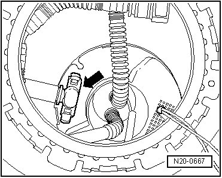
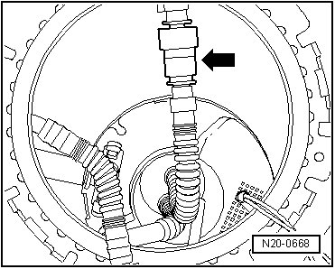

Fuel Gauge Sender: Service and Repair
Fuel Delivery Unit, Fuel Level Sensor and Suction Jet Pumps
Special tools, testers and auxiliary items required
• Wrench (T10202)
Requirements
• The fuel tank must be drained --> [ Fuel Tank, Draining ] Procedures.
• Fuses - 13 - and - 14 - - arrows - must be removed from their sockets.

• Connectors and wires for left and right sender flanges have been removed.
• Locking rings of sensor flanges, right and left, are removed.
Procedure
- Read safety precautions before beginning work --> [ Safety Precautions ] Safety Precautions.
- Pull off connectors - 1 - and - 2 -, as well as hose couplings - 3 - and - 4 - under right sender flange.

- Remove sender flange with pressure regulator.
- Unclip black filler hose - arrow - from fuel delivery unit housing on left and right sides of fuel tank.

- Pull fuel supply line off fuel delivery unit - arrow - on left and right sides of fuel tank to suction jet pumps.

- Unscrew fuel delivery unit in bottom of fuel tank by turning approximately 90 degrees to left.
• The fuel delivery unit housing is filled with fuel. Fuel may run out if the housing is tipped or tilted.
- Unclip fuel gauge senders on each side of fuel tank and pull them out.
- Unclip suction jet pumps from bottom on each side and remove with a slight turn.
- Pull out hose ends through left and right sensor openings.